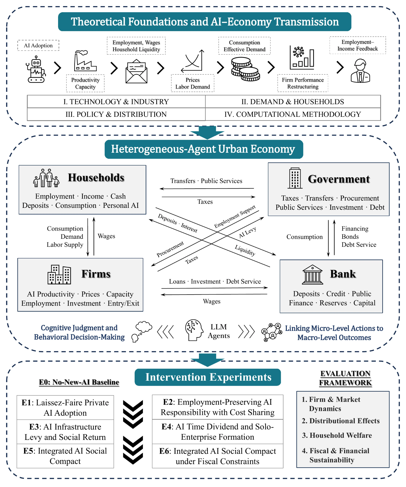
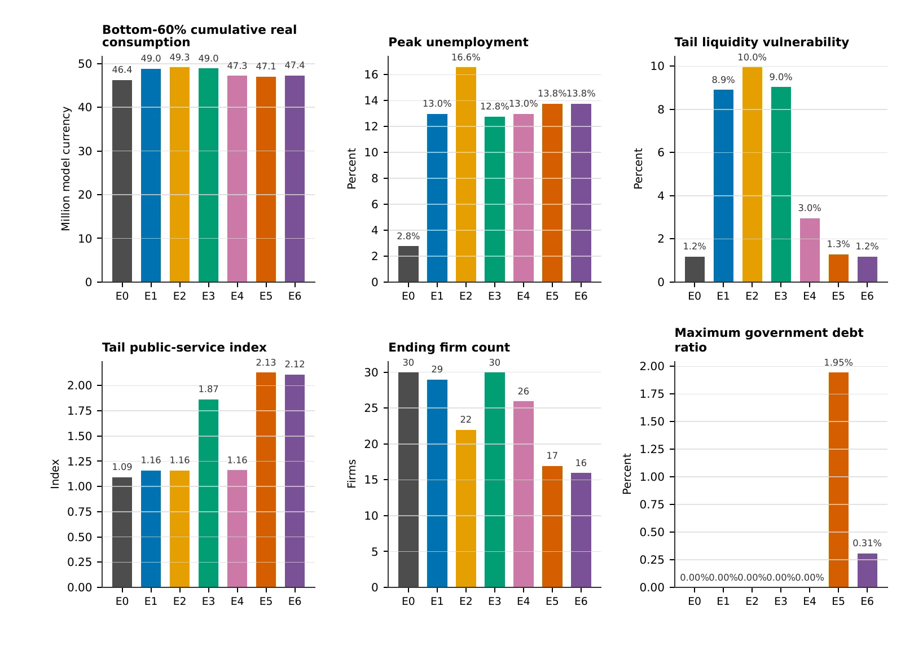

Capacity and substitution
Represent firm-level adoption, productivity change, labor displacement, and reinvestment choices.
Governing productivity, effective demand, and distribution in a stylized urban economy.
The project uses a heterogeneous-agent economic simulation to study why an AI-driven productivity gain does not automatically produce broadly shared prosperity—and which institutional arrangements can alter that transition.
AI changes production capacity, labor demand, income formation, consumption, and public finance at the same time. The model examines these feedbacks jointly instead of treating productivity as an isolated technical shock.
Represent firm-level adoption, productivity change, labor displacement, and reinvestment choices.
Trace how employment, wages, transfers, and household behavior shape effective demand.
Compare structured policy regimes without treating any scenario as a literal forecast.
Framework and outcome figures are shown as high-resolution previews with downloadable vector originals.

The model connects technology and industry, household demand, policy and distribution, and computational decision-making. Institutional scenarios E0-E6 intervene in the same economy and are evaluated across market, distributional, welfare, fiscal, and financial dimensions.

The six panels compare demand, employment, liquidity, public services, firm survival, and fiscal exposure under E0-E6. They are intended to reveal multidimensional trade-offs rather than produce a single scenario ranking.
This is a stylized urban economy designed for mechanism comparison. Scenario differences identify model-implied pathways under explicit assumptions; they are not point forecasts. Normative claims about shared human development remain hypotheses for institutional analysis unless separately supported by empirical evidence.
Agents, markets, flows, decision interfaces, and the system feedback structure.
Institutional assumptions, intervention logic, and comparable outcome trajectories.
Methods, results, robustness checks, evidence boundaries, and governance implications.